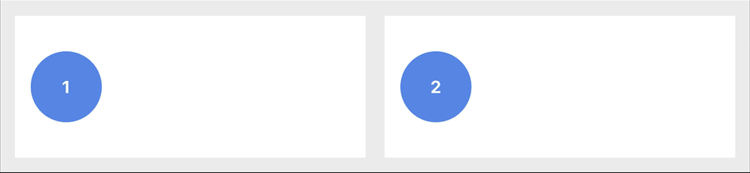
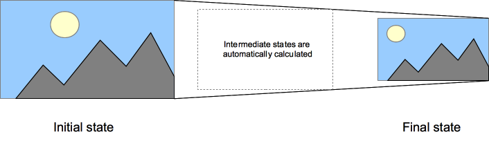

动效开发 1：让它动起来
在现实生活中，人们的大脑习惯了被动态的东西所吸引，适当的动画效果可以为网页添加有价值的交互和反馈，提升用户的情感体验。
情感设计的主要目标是促进人与人之间的沟通，即便媒介是网页。一旦我们在这方面做得到位，电脑本身将回归背后，而网页的个性化将因此得到凸显。
—— Aarron Walter，Designing For Emotion 一书的作者
动画效果是情感设计的重要手段，从本小节开始，我们将为大家介绍「H5 开发」的第四个重要的能力 —— 「动画效果开发」，简称「动效开发」，即综合利用 JavaScript、CSS(3)、SVG、Canvas 等多种 Web 技术手段开发出动人的网页动态效果。
回想下我们第 1 小节提及的 「H5 开发」三角形能力模型，「动效开发」处在三角形的上部，毫无疑问这项能力越强，在此岗位中的竞争力越大。
动效开发 —— 先「动」而后「效」，为网页添加动态元素的方法有很多：
- GIF、Flash —— 廉颇老矣，尚能饭否？
- 视频 —— 可远观而不可亵玩焉
- CSS3 结合 JavaScript —— 当红小生
我们将把重心放在 CSS3 动画上面，因为 CSS3 在现如今的网页动效开发中占据着最为重要的一席，作为老大哥 CSS 的补充，它像是专门为「H5 开发」量身定制的动效武器。
拿起这件武器准备杀出一条血路之前，得先找到它的扳机在哪里。
CSS3 Transition
在 CSS3 的世界里，让网页元素动起来的第一个方法是利用 transition，基于 transition 可以让元素的某个 CSS 属性从指定的开始状态过渡到特定的结束状态。我们将元素「从指定的开始状态过渡到特定的结束状态」这个过程简称为「状态变换」，注意这里的过渡，事实上 transition 便像是页面元素「状态变换」的润滑剂，如果没有 transition，元素「状态变换」的过程将会显得生硬而突兀（如下图中左边的小圆球，查看 DEMO）。

transition 可作用于普通的 CSS 属性（如 background 、opacity ...），也可以作用于 CSS3 出现时新引入的 transform 属性，而利用后者可以实现 3D 的过渡效果。transform 属性就像是 CSS3 这个动效武器子弹里的火药，大家可以通过 MDN 的 《transform》 一文进行进一步地了解学习，务必做到深谙其门道，避免一知半解。
一个 3D 过渡动效例子
如前面所说，利用 transition 结合 transform 可实现元素的 3D 过渡动效，所以我们这个例子的目标是：利用 transform 属性画一个立方体，然后利用 transition 实现立方体的翻转效果。大家不妨打开 CodePen 按照以下步骤亲自动手试试，或者直接 查看 DEMO 体会最终的结果。
步骤 1 - 准备立方体的 HTML 代码
一个立方体（.cube）的 6 个面（.cube-face）。
<div class="demo">
<div class="cube show-default">
<div class="cube-face is-front"><img src="https://rawcdn.githack.com/o2team/misc/gh-pages/o2/img/mms/s1/1.jpg" alt="pic1"/></div>
<div class="cube-face is-back"><img src="https://rawcdn.githack.com/o2team/misc/gh-pages/o2/img/mms/s1/2.jpg" alt="pic2"/></div>
<div class="cube-face is-right"><img src="https://rawcdn.githack.com/o2team/misc/gh-pages/o2/img/mms/s1/3.jpg" alt="pic3"/></div>
<div class="cube-face is-left"><img src="https://rawcdn.githack.com/o2team/misc/gh-pages/o2/img/mms/s1/4.jpg" alt="pic4"/></div>
<div class="cube-face is-top"><img src="https://rawcdn.githack.com/o2team/misc/gh-pages/o2/img/mms/s1/5.jpg" alt="pic5"/></div>
<div class="cube-face is-bottom"><img src="https://rawcdn.githack.com/o2team/misc/gh-pages/o2/img/mms/s1/6.jpg" alt="pic6"/></div>
</div>
</div>
步骤 2 - 利用 CSS(3) 将 6 个面组装成立体形状的立方体
这里使用了 SCSS 样式预处理语言，如果你正在 CodePen 上跟着做，注意将样式预处理器（CSS Preprocessor）配置成为 SCSS。
// demo styles
$cube-size: 300px;
$cube-radius: $cube-size / 2;
.demo {
width: $cube-size;
height: $cube-size;
perspective: 1000px;
position: relative;
margin: 30px auto;
}
.cube {
width: 100%;
height: 100%;
transform-style: preserve-3d;
position: absolute;
&-face {
border: 2px solid #000;
width: 100%;
height: 100%;
position: absolute;
overflow: hidden;
opacity: 0.6;
backface-visibility: visible;
&.is-front {
transform: translateZ( $cube-radius );
}
&.is-back {
transform: rotateX( -180deg ) translateZ( $cube-radius );
}
&.is-right {
transform: rotateY( 90deg ) translateZ( $cube-radius );
}
&.is-left {
transform: rotateY( -90deg ) translateZ( $cube-radius );
}
&.is-top {
transform: rotateX( 90deg ) translateZ( $cube-radius );
}
&.is-bottom {
transform: rotateX( -90deg ) translateZ( $cube-radius );
}
}
img {
width: 100%;
}
}
至此，我们得到一个正面朝着我们的边长为 300px 的立方体，为了让它在网页上呈现 3D 的视觉效果，我们写了以下几行关键的代码：
- 利用 3D 旋转
rotateX或rotateY，以及 Z 轴位移translateZ来衔接拼装立方体的每一个面 - 设置每一个面的背面可见性：
backface-visibility: visible，注意这里前一行代码opacity: 0.6是辅助性的，而backface-visibility属性的默认值其实即visible，这里写出来便于大家理解代码。 - 在立方体的父级元素上设置透视距离：
perspective: 1000px - 在立方体上设置变形方式：
transform-style: preserve-3d
以上关键代码的关键 CSS 属性，在小册后面的「聊一聊 3D」小节中会有进一步的解读，这里就不多说了。读者也可自行在 MDN 上搜到具体的说明资料，建议结合资料和本例子亲自把玩体会。
步骤 3 - 让立方体显得更立体点
为了让立方体默认看起来更立体点（不是单纯地正面对着我们），可以利用 rotate 将立方体在 X 和 Y 轴上各旋转 15deg，让它正面斜对着我们。
注意：以下代码需要合并到前面步骤 2 里的代码中去。
.cube {
...
&.show-default {
transform: translateZ( - $cube-radius ) rotateY( -15deg ) rotateX(-15deg);
}
&.show-left {
transform: translateZ( - $cube-radius ) rotateY( 90deg );
}
&-face {
...
opacity: 0.9;
...
}
...
}
我们给立方体新增了两个表示状态的类 show-default 和 show-left，分别表示它「默认的展示状态 - 正面斜对着我们」和「左面正对着我们」，读者可以依样画葫芦添加另外几个面对着我们的样式代码。
步骤 4 - 设置立方体的 transition 属性
最后一步就是给立方体添加 transition 属性，让它的状态变换拥有过渡动画效果。
通过查阅 MDN 资料可得 transition 的用法为：
.transition-target {
transition: <property> <duration> <timing-function> <delay>;
}
我们为立方体加上相应的代码：
.cube {
...
// <property> = transform
// <timing-function> = ease
// <duration> = 1s
// <delay> = 0
transition: transform ease 1s;
...
}
此时如果我们将立方体 div 容器的 show-default 类名替换成 show-left，就可以看到它左面旋转至我们眼前的 3D 效果啦。
案例最终的效果如下图所示：

Transition 动画的局限性和适用性
transition 实现的动画有下面这些特点：
- 支持有限的 CSS 属性
可通过《CSS animated properties》一文查看支持过渡动效的 CSS 属性。
- 隐式过渡（implicit transitions）
transition 的过渡动画是隐式的（如下图所示，图片来源于 MDN），即除了动画的开始状态和结束状态我们可以自定义之外，「状态变换」的具体过程由浏览器自动执行，中途无法进行人为干预。当然，我们还可以为浏览器执行动画时指定动画的具体时长（duration），以及时间轴函数（timing function）。
- 一次性、不可暂停或反转
transition 只支持两个状态之间的变换过渡，不支持多个状态的连续变换过渡，并且状态的变换是一次性的（无法循环）， 不可暂停，且不可反转（从状态 A 过渡到 B 后不能立即又过渡回 A）。
所以，在实际应用中我们常常利用 transition 来做那些轻量的、修饰性的动效，用于增强用户在网页上操作时得到的反馈。例如：
- 元素「hover」 或「点击」后的反馈
- 弹窗「打开」或「关闭」时的效果
- ...
扩展阅读
通过 Mozilla 的 MDN 文档来了解
transition的详细说明及使用示例：结合 CodePen 代码示例了解
transition和transform的相关属性:
CSS3 Animation
如果我们想让元素的动效支持多个状态之间的连续过渡变换、支持循环，甚至支持暂停或反转，我们该怎么办？答案就是：animation -- 利用 CSS3 让网页元素动起来的第二个方法。
学习 animation 动画需首先掌握两个关键的基本知识点：
- 关键帧（
@keyframes） animation属性
关键帧（@keyframes）
@keyframes 用来定义动画的具体内容，它包括以下内容：
- 动画叫什么名字？
- 动画开始、中间及结束状态有哪些？（可以理解成每个状态对应一个关键帧）
- 每个状态出现在动画过程中的哪个时间点？
我们来瞅一个 @keyframes 的实际例子，来源于有名的 animation 动画库 Animate.css，其中的「bounceIn」动效的关键帧代码如下：
@keyframes bounceIn {
from,
20%,
40%,
60%,
80%,
to {
animation-timing-function: cubic-bezier(0.215, 0.61, 0.355, 1);
}
0% {
opacity: 0;
transform: scale3d(0.3, 0.3, 0.3);
}
20% {
transform: scale3d(1.1, 1.1, 1.1);
}
40% {
transform: scale3d(0.9, 0.9, 0.9);
}
60% {
opacity: 1;
transform: scale3d(1.03, 1.03, 1.03);
}
80% {
transform: scale3d(0.97, 0.97, 0.97);
}
to {
opacity: 1;
transform: scale3d(1, 1, 1);
}
}
显然，这段关键帧的代码做了以下事情：
- 定义了动画的名称为「bounceIn」
- 将动画过程划分成了 6 个状态（6 个关键帧）
- 除了开始和结束这两个时间位置外，另外 4 个关键帧的时间位置分别为：20%、40%、60% 和 80%
animation 属性
细心的读者会发现上面示例中的 animation-timing-function 相关代码，其实是 animation 属性相关的知识点，除了关键帧之外，谙熟 animation 属性（及其“子”属性）的具体含义及用法，也是学习 animation 动效的基本要求。
@keyframes 用来定义一个动画的具体状态内容，而 animation 属性用来定义一个元素执行某个动画时的相关动画设定，包括：
- 指定元素用什么动画？（animation-name）
- 动画的持续时间是多少？（animation-duration）
- 浏览器用什么样的时间轴函数来执行该动画？（animation-timing-function）
- 是否需要延时执行该动画？(animation-delay)
- 动画循环执行的次数是多少？（animation-iteration-count）
- 动画执行的方向是什么？（animation-direction）
- 动画填充模式是什么？（animation-fill-mode）
- 动画执行状态是运行还是暂停？（animation-play-state）
对于 animation 相关属性的介绍和使用示例，可以在 MDN 找到十分详尽的资料，这里就不搬运了，读者可以点击括号内的链接进行逐一学习。
值得一提的是，animation 动画的延时可以设置为负值（试试看），善用负值的 animation-delay 有时候可以用最少的代码实现出乎意料的动效。
上图的案例（查看 DEMO）来源于《CSS Animation Tricks: State Jumping, Negative Delays, Animating Origin, and More》 一文，利用负值 animation-delay 复用同一个动画轻松实现。相同的效果如果用 GIF 或 transition 来实现的话，恐怕会复杂很多。
例子 - 让立方体自己转起来
为了更好地体会 transition 和 animation 两者做动效的异同之处，我们接下来试着利用 animation 改写前面 transition 做的立方体例子，让它自己转动起来。
步骤 1 - 利用 @keyframes 定义转动的动画
定义一个名为「autoRotate」的关键帧动画，并将 transition 版本例子中显示立方体每一面的代码搬到 @keyframes 中去。 立方体有 6 个面，所以我们把整个动画划分为 6 个关键帧，如下所示：
@keyframes autoRotate {
// show-front
0%, 100% {
transform: translateZ( - $cube-radius );
}
// show-back
16.5% {
transform: translateZ( - $cube-radius ) rotateX( -180deg );
}
// show-left
33% {
transform: translateZ( - $cube-radius ) rotateY( 90deg );
}
// show-right
49.5% {
transform: translateZ( - $cube-radius ) rotateY( -90deg );
}
// show-top
66% {
transform: translateZ( - $cube-radius ) rotateX( -90deg );
}
// show-bottom
82.5% {
transform: translateZ( - $cube-radius ) rotateX( 90deg );
}
}
步骤2 - 将 transition 属性替换成 animation 属性
利用 animation 属性，在立方体上应用我们前面定义的「autoRotate」动画，并做以下设定：
- 时间轴函数（
animation-timing-function）为ease - 持续时间（
animation-duration）为 18 秒 - 执行次数（
animation-iteration-count）为infinite，即无限次 - 执行方向（
animation-direction）为alternate，即正、反向交替执行
// transition: transform ease 1s;
animation: autoRotate ease 18s alternate infinite;
以上两个简单的步骤完成了 animation 替代 transition 实现更丰富的动效，读者可以通过 查看完整示例代码 并修改 animation 属性的其他设定（如 animation-play-state 等）来加深体会。
扩展阅读
- 结合 CodePen 案例学习
animation的每一个属性：CSS Animation for Beginners - 学习
animation动画的小奇巧：CSS Animation Tricks: State Jumping, Negative Delays, Animating Origin, and More
小结
动效开发以「动」为始，本小节结合示例介绍了利用 CSS3 让网页元素动起来的两种方法——transition 和 animation，通过对比和结合来加深读者对这两种方法制作动效的理解与体会。